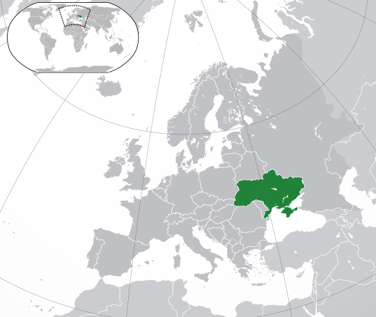

Вступ
Україна — це держава в Східній Європі, яка має багату історію, глибоке культурне коріння та стратегічне геополітичне положення. Впродовж століть Україна була ареною важливих подій, які вплинули не лише на розвиток її власного суспільства, але й на долю Європи та світу.
Географічне положення України
Україна розташована в Східній Європі, межує з росією на сході, Білоруссю на півночі, Польщею, Словаччиною та Угорщиною на заході, а також з Румунією та Молдовою на південному заході. На півдні країна омивається Чорним та Азовським морями. Її площа становить приблизно 603 628 км².
Історія України
Історія України багата на визначні події та особистості. Починаючи з доби Київської Русі — однієї з наймогутніших держав середньовічної Європи, через періоди польсько-литовського співжиття, козаччини та боротьби за незалежність у ХХ столітті. Після здобуття незалежності від Радянського Союзу в 1991 році Україна стала суверенною державою, пройшовши через складні політичні та економічні періоди.
Українська культура та традиції
Українська культура є унікальною та різноманітною, вона увібрала в себе елементи східноєвропейської, козацької та народної спадщини. Найбільш відомими культурними символами України є вишиванка, борщ, вареники, а також народні пісні та танці. Українська мова є однією з найстаріших слов'янських мов, що відображає глибоку історичну спадщину. Крім того, Україна має багаті літературні традиції, представлені такими авторами, як Тарас Шевченко, Іван Франко та Леся Українка.
Сучасність: Економіка, Політика та Суспільство
Україна за останні десятиліття пережила значні зміни в економічній та політичній сферах. Революція Гідності у 2014 році стала поворотним моментом в новітній історії України, після чого країна взяла курс на європейську інтеграцію та реформи. Однак військовий конфлікт з росією та анексія Криму створили додаткові виклики для національної безпеки. Сучасне суспільство України активно прагне демократичних перетворень та економічного розвитку.
Висновок
Україна — це країна з багатою історією, унікальною культурою та сильним прагненням до незалежності та розвитку. Незважаючи на складні політичні та економічні обставини, український народ продовжує боротися за свободу, демократію та процвітання. З кожним роком Україна стає все більш важливою частиною європейської спільноти.